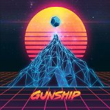
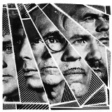
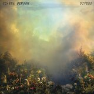
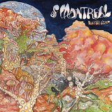
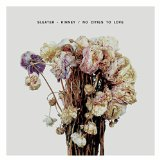
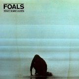
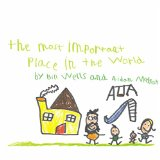
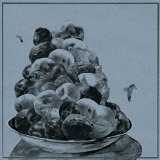

Top Tracks of 2015: Individual Favourites
By No Ripcord Staff
We’ve all got our tracks from 2015 that we feel didn’t get the attention they deserved. That’s why, ahead of our tracks of the year list, we’re shining a light on the songs that need a bit of extra love. Maybe their selection here will lead to the plaudits they merit.
Gunship
“Tech Noir”
(from “Gunship” on Ingrooves)
I’m a pretty big fan of retro synthesizer soundtracks, especially ones with walls of pulsating synthesizers and reverb-soaked drum machines. So Tech Noir, with its 80s production polish, John Carpenter voice-over, and gear shifting sound effects is easy for me to latch onto. However, while nostalgia certainly seems to be the most immediate appeal of Tech Noir, it is ultimately excellent song-smithing that propels it forward. With that said, it is tragically hard to find an appropriate setting to properly listen to Tech Noir, as neon-blazoned discotheques have been out of fashion in America since the late 1980s. However, if you live in an apartment adorned with blacklight posters of sci-fi blockbusters and illuminated by an arsenal of laser lights, then you are in luck! Andrew Ciraulo
FFS
“Collaborations Don’t Work”
(from “FFS” on Domino Records)
They do, especially when both bands shine and the work stands alongside the best they produced. This track is the highlight of the FFS album, combining techno, glam rock, comic opera vocals, and intense classical piano. Fun is the objective here, and it's highly contagious, with every line a gem: “Mozart didn't need a hack to chart / Warhol didn't ask De Kooning about art.” The transitions between styles are smooth and all the melodies are catchy. Every stab from the Maels (“I don't need your navel gazing”), gets a sharp riposte from Alex Kapranos (“If I ever need a father, it won't be you, old man”), each treading the edge of magnificent absurdity. This feast of wit arrived just in time to lighten this gloomy year. Angel Aguilar
Joanna Newsom
“Goose Eggs”
(from “Divers” on Drag City)
Divers may be Joanna Newsom’s best album yet, in no small part because it cuts down on the meandering, shapeless quality of much of her earlier work. The beginning of Goose Eggs, an interplay between electric piano and borderline-medieval harpsichord, threatens to drift off in this direction. Luckily, the song quickly falls into an established rhythm, one that strikes a balance between complexity and tight construction as well as any song in her catalogue. Ironically, the characters in her song can’t seem to stop meandering, though here it’s part of a moving search for connection and the feeling of belonging. Newsom makes it a matter of both where we are and whom we’re there with, singing, “I had better find my way to being the kind of friend you need in me.” Divers represents a new place for Newsom, but this song proves she’s found her peace there. Brad Hanford
Wolf Alice
“Giant Peach”
(from “My Love is Cool” on Dirty Hit)
Wolf Alice have had an incredible year. My Love Is Cool was one of the most eagerly anticipated British debuts in a long time, dropping in June with a ridiculous amount of strings to its bow. One of those strings was a feral, frosty psycho-grunge track that exuded swagger and a callous brand of cool. Giant Peach snakes out of the blocks amidst a drenching of feedback. The track advances intently, with a razor-sharp drum skit and a stinging, devious chug providing the foundations for Ellie Rowsell’s thorny-sweet vocal to revel in its danger. There’s also one of the biggest riffs of the year in here, with the track only finishing once that riff has robbed you blind. A genuine monster of a track. Carl Purvis
KDA
“Rumble (Shadow Child re-edit)”
(stand-alone single on Ministry of Sound)
As a passionate fan of house music, there are few things that frustrate me more than when an artist or record label chooses to plaster ill-fitting vocals onto a well-crafted underground track, seemingly only to make it more commercially successful. In 2014, the biggest victim of this was Oliver Heldens’ Gecko. This year, the award goes to London-based Kris Di Angelis’ (aka KDA) Rumble (Shadow Child re-edit) (subsequently renamed Turn The Music Louder). For those only familiar with the painful re-work featuring a certain Mr. T Tempah and one Ms. K Brien, I beg you to listen to the track which inspired it. Its joyously repetitive, infectious melody may end up embedding something of a permanent earworm but it’s worth it to enjoy one of the very best pieces of house music 2015 had to offer. Craig Stevens
Of Montreal
“Empyrean Abattoir”
(from “Aureate Gloom” on Polyvinyl)
New Of Montreal music wasn't exactly top of my 2015 wish-list, so credit must go to Kevin Barnes and company for turning my ambivalence into a temporary obsession in less than five minutes. Empyrean Abattoir bears all of the hallmarks of the band's finest work, while also including several traits of its worst, presumably to remind you that you're still listening to Of Montreal. While I'm tempted to award them a bonus mark for including 'abattoir' in the title, I simply can't turn a blind eye to the fact it's preceded by the word 'empyrean'. Some artists, it seems, will never learn. David Coleman
Sleater-Kinney
“Bury Our Friends”
(from “No Cities To Love” on Sub Pop)
Bury Our Friends isn’t the obvious choice from Sleater-Kinney's astonishing 2015 release, No Cities to Love. Still, for me, this anthem epitomises the album’s very core, the concept of rebirth after a decade apart. Starting out a bit calmer, "Like some doll you thought you could throw away / I found my legs," the song crescendos into a march, a call to arms: "Exhume our idols and bury our friends / We're wild and weary but we won't give in / We're sick with worry / These nervous days / We live on dread in our own gilded age." This isn't just a renaissance. It's a chthonic birth from the bowels of the earth breaking painfully free back into a completely different universe. After ten years of starvation, "untamed and hungry," "wild and weary," they return to give if not the best recording of 2015, at least my top pick. Gabbie Nirenburg
Deniro Farrar
“Nostalgia”
(from “Guilty Until Proven Innocent EP” on Warner Bros.)
I’m not from North Carolina, I’m from a tiny town in England. Deniro Farrar and I have lived very different lives. Great art unites, and despite having next to nothing in common with the guy, Deniro Farrar forms a personal connection. Tapping into the rich vein of familial raps, Nostalgia is a Dirty South version of Proust, the story of a new father trying to make sense of his childhood. It captures the bipolar view we have of the past, wishing it were different but missing it so much, with a series of recollections that we can all recognise. Riding bikes with your friends, a relative with cancer, a mother doing everything she can; it’s happened to all of us, shaped us. Each hazy verse is backed by a dream-like, Dilla-style beat, encouraging wistful glances out the window. Have a listen, shed a tear, look back. James McKenna
Foals
“What Went Down”
(from “What Went Down” on Warner Bros.)
From the opening notes of What Went Down, it's clear that Foals are on a take-no-prisoners mission. More direct and more aggressive than anything in their catalogue so far, this single is a blast of fuzzed-out guitar riffs and ragged vocals. During the verses, the call and response of vocals and chords simulate a predator chasing its prey. "When I see a man, I see a liar," shouts Yannis Philippakis for the chorus, as the music savagely pounces. Then there's the wonderful keyboard-laden bridge, which brings a chanting, almost spiritual touch to the number. While older songs like Inhaler hinted at Foals' combativeness, What Went Down puts it front and centre as a bold-faced, all-caps battle cry. Joe Marvilli
Bill Wells & Aidan Moffat
“Any Other Mirror”
(from “The Most Important Place in the World” on Chemikal Underground)
Despite making his name with youthful tales of excess and regret, Aidan Moffat actually suits domesticity better. Pop music is obsessed with the first flushes of lust, but on Any Other Mirror, Moffat poignantly observes the teamwork, understanding and unconditional love that comes from a committed long-term relationship. It isn’t all picnics on the beach and spontaneity; it runs much deeper than that, even if the order of the day sometimes has to be housework and paying the bills. Atop Bill Wells’ understated, slinky Latin percussion, warm brass and jazz-influenced piano chords, Moffat imparts the universal truth: “I might be a useless prick / But I feel ugly, old and thick / In any other mirror but you.” Moffat has a unique gift in turning the vulgar into the poetic, and I’m not sure I’ve ever related to a lyric more. Joe Rivers
A$AP Rocky
“Excuse Me”
(from “At.Long.Last.A$AP” on RCA Records)
Given A$AP Rocky’s heavy fixation with hallucinogens in At.Long.Last.A$AP, it only makes sense that Excuse Me unfolds like an imaginary dreamland where he’s the conductor of a warped Rodgers & Hammerstein musical. Nevertheless, traces of Rocky’s brash ego are ever-present, displayed with blunt specificity verse by verse, rapping a string of disconnected thoughts as if he’s dived headfirst into a nebulous, paranoid robo-trip. Naturally, it augments Rocky’s arrogance tenfold, demanding the respect he thinks he deserves without giving his naysayers the chance to even the score. It’s Lord Flacko in full regal costume, and given the track’s grand opulence, his place in the throne is rightfully secured and shouldn’t be threatened. Juan Edgardo Rodriguez
Shura
“White Light”
(stand-alone single on Bsessi Limited)
Shura’s rise through the ranks in 2015 has happened at a pace that’s been less meteoric, more absurd. No doubt this will result in a backlash questioning the hype just around the time that she gets around to releasing an album, but so far, what Shura’s rapid development has provided us with is a steady succession of exceptional singles. Each one has been perfectly fine-tuned and fiercely calibrated, but also entirely filled with giddy excitement and breathy anticipation, of which, White Light might be the giddiest. Released at the start of June, the track’s combination of tastefully crafted, 80s Madonna-leaning guitar and synths, an endearingly silly sci-fi theme and sweeping bubblegum chorus made it a perfect summer soundtrack. One that was ideally suited for both festival crowds and just hitting the open road (or hitching a ride in a spaceship) and taking off into the great blue yonder. Mark Davison
Majical Cloudz
“Downtown”
(from “Are You Alone?” on Matador Records)
Devon Welsh’s lyrics have traditionally seemed to come from the darkest depths of his heart, which is why the initial sweetness of Downtown is so immediately arresting in the context of Majical Cloudz’ music. Downtown is largely Welsh’s best attempt at capturing the joy of not being alone in the moment, holding the hands of a loved one in busy city streets and wondering, “Is it really this cool to be in your life?” Even when the cloudz do roll in and Welsh begins to wonder if the feeling won’t last, there’s an endearing optimism that even in the worst case scenario, some good will come. It seems foolish, but what Downtown conveys is that in the face of uncertainty, when something so beautiful is in your grasp, maybe a little wide-eyed optimism is all we have to keep things together. Peter Quinton

Hop Along
“Happy to See Me”
(from “Painted Shut” on Saddle Creek)
To close out the first side of their near-perfect indie rock album Painted Shut, Hop Along's frontwoman Frances Quinlan strips it back to an acoustic guitar and a harp, and lets her throaty, acrobatic vocals completely let go. The song's first line, "Trying to change my mind about how everything went", is pithily poignant, transferable and intensely relatable. In the song's second half she repeats the line, "We all will remember things the same way", until she's screaming at the top of her voice - it takes her recurrent lyrical theme of collective affect and the irony of the gap between self and self-perception to desperate extremes, and it pretty much reduces me to a puddle. Stephen Wragg
Remember to check back soon for our top tracks of 2015 list.
7 December, 2015 - 11:43 — No Ripcord Staff